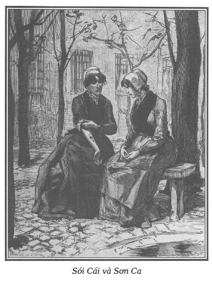

Chúng tôi vững tin vào ảnh hưởng của một số người có cá tính nổi trội, được cảm tình của quần chúng, tác động mạnh đến quần chúng trong việc thiện, cũng như trong điều ác.
Số người này táo bạo, bồng bột, bất khuất nhằm vào những dục vọng đen tối, nâng quần chúng lên như gió bão tung sóng biển và cũng như dông tố, những cơn bão lòng vừa dữ dội lại vừa ngắn ngủi. Tiếp theo cơn thịnh nộ sục sôi là những cảm giác u sầu, khó chịu làm cho những kiếp người khốn khổ càng tệ hại thêm. Sự chán chường sau một việc làm hung bạo bao giờ cũng cay đắng, sự thức tỉnh sau khi đã hung hăng quá độ bao giờ cũng nhọc nhằn.
Sói Cái, nếu ta muốn, có thể coi là hiện thân của loại người có thứ ảnh hưởng tai hại đó.
Một số người khác hiếm có hơn, bởi vì bản năng tốt đẹp của họ được hỗ trợ bằng trí thông minh, ở họ trí tuệ ngang tầm với trái tim. Họ khuyến thiện trong khi những kẻ nói trên gây ác. Ảnh hưởng của họ nhè nhẹ thấm vào tâm hồn như tia nắng ấm thấm vào cơ thể, đem lại nguồn nhiệt của sự sống như hạt sương mát mẻ của đêm hè thấm vào mặt đất khô cằn nóng bỏng.
Marie có thể coi là hiện thân của thứ ảnh hưởng tốt lành đó.
Phản ứng trong cái tốt không đột ngột như phản ứng trong cái xấu. Nhưng hiệu lực của nó kéo dài lâu hơn. Một cái gì êm ái, khó quên, từ từ lan tỏa, yên tĩnh, làm nở nang những trái tim khô cứng nhất, cho họ hưởng một niềm hoan lạc thanh thản khó tả.
Khốn thay, phép màu chỉ có đến thế!
Sau khi thoáng thấy được ánh sáng thần tiên, những tâm hồn bại hoại lại rơi vào bóng tối của cuộc sống hằng ngày. Hồi ức về những cảm giác ngọt ngào được hưởng trong phút chốc bị xóa nhòa dần. Tuy nhiên, đôi khi họ mơ hồ tìm cách nhớ lại, cũng như chúng ta cố gắng thì thầm hát lại những bài hát ru được nghe từ thuở ấu thơ hạnh phúc.
Nhờ có việc làm tốt mà cô đã gợi ý, những bạn tù của Marie vừa được hưởng những phút êm dịu thoáng qua của những tình cảm trong lành, cả Sói Cái cũng vậy, nhưng ở Sói Cái thì cảm giác ấy ngắn hơn, bởi những lý do sau đây.
Nếu ta ngạc nhiên vì nghe và thấy Marie xưa kia thụ động, nhẫn nhục chịu đau khổ, nay hành động và nói năng mạnh dạn, có quyền uy, là bởi vì những bài học cao quý tiếp thu được trong thời gian ở trang trại Bouqueval đã nhanh chóng làm nảy nở những đức tính hiếm có trong con người có bản chất ưu việt này.
Marie hiểu rằng chỉ than khóc một quá khứ vô phương cứu chữa là không đủ vì người ta chỉ chuộc tội bằng cách làm việc thiện hoặc gợi ý làm việc thiện.
Chúng tôi vừa kể: Sói Cái ngồi trên chiếc ghế gỗ dài, bên cạnh Marie.
Sự xích lại gần nhau của hai cô gái này bày ra một sự tương phản lạ lùng.
Ánh nắng yếu ớt của mặt trời mùa đông chiếu sáng lên người họ. Bầu trời trong vắt nổi lên những đốm mây trắng nhỏ, xốp như bông. Vài con chim, gặp tiết trời ấm áp, hót trong những cành đen sẫm của những cây dẻ lớn trong sân, hai hoặc ba con chim sẻ táo tợn hơn những con khác, đến uống và tắm trong dòng nước nhỏ từ bể nước tràn ra, rêu xanh như nhung bọc lấy gờ đá. Giữa các khe hở, đó đây mọc những túm cỏ và các cây gai bám vào tường, không bị băng giá làm trụi.
Việc mô tả cái bể nước nhà tù này có vẻ quá tầm thường nhưng Marie không để lọt một chi tiết nào. Đôi mắt buồn rầu chăm chú nhìn vào gốc cây xanh nhỏ ấy và mặt nước trong trẻo phản chiếu sắc trắng linh hoạt của những đám mây chạy trên nền trời xanh, tia nắng vàng khúc xạ lấp lánh ánh mặt trời rất đẹp, cô thở dài nghĩ đến những cảnh huy hoàng của thiên nhiên mà cô yêu thích, cô ngắm nghía vẻ nên thơ mà hiện cô đang bị ngăn cách.
– Chị muốn nói gì với em? – Marie hỏi cô bạn đang ngồi bên cạnh mình, mặt vẫn tối sầm, lặng lẽ.
– Chị em mình phải nói cho ra lẽ. Không thể kéo dài mãi thế này. – Sói Cái nói, giọng đanh lại.
– Em không hiểu được chị, Sói Cái ạ.
– Hồi nãy trong sân, về chuyện Mont-Saint-Jean, tôi đã tự nhủ không thể nhường bước Sơn Ca được nữa, thế mà tôi vừa phải nhường…
– Nhưng…
– Tôi đã nói không thể như thế mãi được.
– Chị có điều gì chống lại em, chị Sói Cái?
– Tôi… từ khi cô đến đây, tôi không còn là tôi nữa… không còn can đảm, sức mạnh, sự gan góc nữa…
Rồi ngừng nói, Sói Cái vén cánh tay áo lên, giơ cho Marie thấy cánh tay trắng, rắn chắc, phủ lông tơ đen, phần trên của cánh tay trổ một dấu chàm không xóa được, vẽ hình một con dao găm xanh, cắm ngập một nửa vào trái tim đỏ, dưới huy hiệu này có hàng chữ:
Hèn thì chết!
Martial.
N.S.Đ (nhớ suốt đời)

.– Cô thấy không? – Sói Cái khoe.
– Có… cái này kinh khủng, đáng sợ lắm. – Marie nói rồi quay mặt đi.
– Khi Martial, người tình của tôi, lấy một cái dùi nung đỏ, viết những chữ này lên cánh tay: “Hèn thì chết!”, anh ấy tưởng tôi can đảm. Nếu anh ấy biết cách cư xử của tôi ba ngày hôm nay, anh ấy sẽ cắm con dao vào người tôi như lưỡi dao này cắm vào trái tim… và anh ấy làm đúng, vì anh ấy đã viết: “Hèn thì chết!” mà tôi đúng là hèn.
– Chị làm gì mà hèn?
– Tất cả…
– Chị hối tiếc ý nghĩ tốt lành vừa rồi à?
– Vâng…
– A, em không tin.
– Tôi xin nhắc lại là tôi hối tiếc, bởi đây là thêm một bằng chứng về quyền năng của cô đối với bọn tôi. Hẳn là cô có nghe Mont-Saint-Jean nói, khi chị ta quỳ xuống… cảm ơn cô?
– Chị ấy nói gì?
– Chị ta nói về chúng tôi, “chỉ một tí tẹo thôi, cô đã chuyển chúng tôi từ xấu sang tốt”. Đáng lý tôi đã bóp cổ chị ta khi chị ta nói ra câu ấy, bởi nhục nhã cho chúng tôi, thật thế. Đúng, chỉ trong khoảnh khắc cô đã đảo ngược chúng tôi hoàn toàn. Người ta nghe cô, người ta làm theo động tác ban đầu, người ta bị mắc lừa cô, như hồi nãy…
– Em đánh lừa vì đã cứu giúp người đàn bà khốn khổ này ư?
– Không phải chỉ những chuyện đó. Tôi chưa từng cúi đầu trước ai. Tên tôi là Sói Cái và tôi đúng với cái tên ấy. Nhiều phụ nữ đã phải mang thương tích tôi gây ra, đàn ông cũng thế, không thể có chuyện một cô gái bé nhỏ như cô lại có thể đặt tôi dưới chân.
– Em… mà làm sao?
– Nào tôi biết được làm sao? Cô đến đây, bước đầu là nhục mạ tôi…
– Nhục mạ chị?
– Phải. Cô hỏi ai muốn lấy bánh của cô. Tôi là người đầu tiên trả lời: “Tôi!” Mont-Saint-Jean hỏi sau mà cô lại đem cho chị ta. Giận dữ, tôi giơ dao xông đến chỗ cô…
Marie nói tiếp:
– Và em nói với chị: “Giết em đi, nếu chị muốn nhưng đừng làm em đau đớn quá, thế thôi.”
– Thế thôi! Đúng, chỉ thế thôi! Vậy mà chỉ những lời ấy đã làm lưỡi dao rơi khỏi tay tôi, khiến tôi phải xin lỗi cô… Cô, người đã nhục mạ tôi. Có thật tự nhiên như vậy không? Khi tôi đã bình tĩnh lại, tôi chỉ làm tình làm tội tôi thôi. Và buổi chiều hôm cô đến đây, khi cô quỳ xuống cầu kinh, tại sao, đáng lẽ phải chế nhạo và làm náo động cả phòng ngủ lên, tại sao tôi lại nói: “Để cô ấy yên. Cô ấy cầu kinh là bởi cô ấy có quyền làm thế.” Và hôm sau, tại sao tôi và cả bọn thấy xấu hổ khi thay áo trước mặt cô?
– Em không biết, chị Sói Cái ạ!
Sói Cái nói tiếp, giọng mỉa mai:
– Thật không! Cô mà không biết à? Đúng là thỉnh thoảng bọn tôi vẫn nói đùa, cô khác loài với bọn tôi. Cô có tin như vậy không?
– Chưa bao giờ em nói với các chị là em tin như vậy.
– Không, cô không nói nhưng cô vẫn làm đúng như thế.
– Em van chị, chị hãy nghe em.
– Không, nghe cô nhìn cô là không hay cho bọn tôi. Cho đến nay, tôi chưa hề ghen tị với ai. Thế mà đã hai, ba lần tôi tự bắt gặp… thật là ngu xuẩn và hèn hạ… tự bắt gặp mình thèm muốn khuôn mặt Mẹ Đồng Trinh của cô, dáng người dịu dàng và buồn bã của cô… Vâng, tôi ghen tị đến cả mái tóc vàng và đôi mắt xanh của cô, tôi lúc nào cũng ghét người tóc vàng, bởi tôi tóc nâu. Muốn giống cô… tôi, Sói Cái. Tôi, cách đây tám ngày, hẳn tôi sẽ đánh thành tật kẻ nào dám nói với tôi như vậy. Cũng chẳng phải số phận của cô làm tôi mơ tưởng. Cô sầu tư như một Madeleine. Có thật tự nhiên như vậy không?
– Làm sao em biết được những ấn tượng em gây ra cho chị?
– Ồ! Cô biết rất rõ việc mình làm với vẻ như là không quan tâm.
– Thế chị nghĩ em có ý đồ xấu nào?
– Tôi làm sao mà biết được. Thì đúng vì tôi không hiểu gì nên mới đem lòng nghi ngờ cô. Còn điều này nữa: trước đây, lúc nào tôi cũng vui vẻ hoặc giận dữ nhưng không bao giờ phải nghĩ ngợi, nay cô làm tôi thành người hay tư lự. Đúng, có những lời cô nói làm khuấy động lòng tôi, mặc dù tôi không muốn, và bắt tôi phải nghĩ đến nhiều điều buồn bã.
– Em rất đáng trách vì đã làm chị buồn, chị Sói Cái ạ! Nhưng em không nhớ là đã nói gì với chị…
Sói Cái hấp tấp, giận dữ ngắt lời:
– Trời, việc cô làm đôi khi cũng gây xúc cảm như lời cô nói. Cô tinh ranh lắm!
– Đừng tức tối, chị Sói Cái ạ! Chị hãy nói rõ ra…
– Hôm qua, trong xưởng tôi trông thấy rõ cô. Cô cúi đầu, mắt chăm chú nhìn vào hàng cô đang may, bỗng một giọt nước mắt rơi vào bàn tay cô… Cô nhìn một lát, rồi đưa tay lên môi như để hôn, để chùi, có phải không?
– Phải.
– Chuyện chẳng có gì nhưng cô có vẻ đau khổ, rất đau khổ, khiến tôi cũng não lòng, điên đảo… Nào có phải chuyện đùa? Lạ thật! Lúc nào tôi cũng trơ như đá trước những việc xảy ra, chưa ai khoe được thấy tôi khóc… Thế mà chỉ thấy khuôn mặt non trẻ của cô là tôi thấy mềm nhũn tâm hồn! Phải, tất cả những cái đó là hèn yếu, bằng chứng là đã ba ngày nay, tôi không dám viết thư cho Martial, người tình của tôi, bởi cảm thấy lòng mình không trong sáng. Phải, gần cô, tính tình tôi trở thành nhạt nhẽo, phải chấm dứt tình trạng này thôi, đủ rồi. Tình huống sẽ xấu đi, tôi hiểu lắm… Tôi muốn tôi vẫn cứ là tôi… không ai chế giễu được.
– Tại sao lại chế giễu chị?
– Đúng thế, bởi người ta sẽ thấy tôi làm đủ điều khôn dại, tôi, con người đã làm cho mọi người run sợ. Không, không, tôi hai mươi tuổi, tôi cũng đẹp như cô, tôi đẹp kiểu của tôi, tôi hung dữ… Mọi người sợ tôi, tôi muốn thế. Tôi chẳng cần gì cả. Liệu hồn kẻ nào dám nói trái lại!
– Chị giận em ư, chị Sói Cái?
– Phải, đối với tôi, cô chẳng hay ho gì. Cứ như thế này, chỉ mười lăm ngày, đáng lẽ gọi tôi là Sói Cái, người ta sẽ gọi tôi là Cừu Cái. Tôi không bao giờ lại chịu để thành như vậy, nếu thế Martial sẽ giết tôi… Cuối cùng, tôi không muốn lui tới gần cô nữa, để xa hẳn cô, tôi sẽ xin đổi phòng. Nếu người ta không cho, tôi sẽ làm một việc tồi tệ nào đó để giữ lại bản sắc và người ta sẽ cho tôi vào hầm tối cho đến lúc ra tù. Đấy là điều tôi muốn nói với cô, Sơn Ca ạ!
Marie hiểu rằng tâm hồn bạn mình chưa phải hoàn toàn hư hỏng và đang vật vã chống lại những khuynh hướng tốt. Hẳn rằng sự vươn lên của cái tốt đã được thức tỉnh trong lòng Sói Cái mối cảm tình và sức hấp dẫn không có chủ định của Marie. May thay cho nhân loại, một số gương hiếm hoi nhưng rực rỡ đã chứng minh rằng có những con người ưu tú, có sức hấp dẫn mạnh mẽ, hầu như ngoài ý định của họ, thu hút những sinh linh ngoan cố nhất vào phạm vi ảnh hưởng của họ, dần dần lôi cuốn và cảm hóa được chúng.
Thành công kỳ diệu của một vài giáo sĩ, tông đồ cũng không thể cắt nghĩa được bằng cách nào khác.
Ở đây, trong một phạm vi hạn hẹp hơn rất nhiều, bản chất mối quan hệ giữa Marie và Sói Cái là như vậy. Nhưng Sói Cái, do một mâu thuẫn kỳ quặc, hay đúng hơn, do hệ quả của cá tính bất trị và tai quái, tìm mọi cách để chống lại ảnh hưởng tốt lành, cũng như những người lương thiện kịch liệt chống lại những ảnh hưởng xấu.
Nếu nghĩ rằng thói xấu thường có một thứ tự kiêu tai hại, ta sẽ không ngạc nhiên thấy Sói Cái tìm mọi cách để vẫn nổi tiếng là bất kham và đáng sợ, để không từ Sói Cái thành Cừu Cái như lời cô ta nói.
Nhưng tất cả những do dự, giận dữ, giằng co đó, lại chen vào một số hành động hào hiệp, chứng tỏ ở con người khốn khổ này còn có những dấu hiệu tốt, đầy ý nghĩa, để Marie không từ bỏ hy vọng mà cô đã có một lúc nào đó.
Phải, cảm thấy Sói Cái không phải hoàn toàn hư hỏng, cô muốn cứu Sói Cái như người ta đã cứu cô trước đây. Marie suy nghĩ: “Cách tỏ lòng biết ơn tốt nhất đối với ân nhân của ta là, trong trường hợp còn có thể, cho người khác những lời khuyên cao quý mà ân nhân đã cho mình.”
Rụt rè cầm tay Sói Cái đang ngờ vực nhìn mình, Marie nói:
– Chị Sói Cái ạ, em cam đoan với chị, chị chú ý đến em không phải vì chị hèn, mà là vì chị hào hiệp. Chỉ có những tấm lòng quả cảm mới xúc động trước tai họa của những người khác.
Sói Cái ngắt lời tàn nhẫn:
– Không có độ lượng, quả cảm gì trong chuyện này, chỉ là sự hèn hạ. Vả lại, tôi không muốn cô nói là tôi xúc động, điều đó không đúng.
– Em không nói thế nữa, Sói Cái ạ! Nhưng vì chị đã chú ý đến em, em phải biết ơn chị, phải không?
– Tôi chẳng cần đâu! Chiều nay tôi sẽ chuyển sang một phòng khác hoặc một mình trong hầm tối, và chẳng bao lâu, ơn trời, tôi sẽ được ra.
– Ra khỏi đây thì chị đi đâu?
– Kìa, về nhà tôi chứ đi đâu, phố Pierre-Lescot. Tôi có nhà cửa, đồ đạc ở đấy.
Sơn Ca hy vọng tiếp nối câu chuyện bằng sự việc mà Sói Cái quan tâm:
– Còn anh Martial, chị sẽ vui mừng gặp lại anh ấy chứ?
Sói Cái sôi nổi:
– Ồ, phải. Khi tôi bị bắt, anh ấy mới ốm dậy. Anh ấy lên cơn sốt vì luôn sống trên mặt nước. Mười bảy ngày đêm, tôi không rời anh ấy một phút, tôi đã bán một nửa đồ đạc của tôi để trả tiền thầy, tiền thuốc, tất cả… Tôi có thể khoe điều đó và tôi đã đem ra khoe. Nếu người yêu tôi còn sống, đó là nhờ có tôi… Hôm qua tôi còn thắp một cây nến cho anh ấy. Cũng là chuyện nhảm thôi, nhưng chẳng sao, đôi khi làm thế cũng thấy có hiệu quả rất tốt đối với người mới lành bệnh…
– Thế bây giờ anh ấy ở đâu? Làm gì?
– Anh ấy làm gần cầu Asnières bên bờ sông.
– Bên bờ sông?
– Phải, anh ấy ở cùng gia đình, trong một cái nhà lẻ bên sông. Anh ấy luôn phải đương đầu với bọn cảnh sát. Anh ấy mà đang ở trong thuyền với cây súng hai nòng thì chớ mà lại gần! – Sói Cái kiêu hãnh nói.
– Nghề nghiệp của anh ấy là gì?
– Đêm, anh ấy đánh cá trộm. Anh ấy dũng mãnh như sư tử. Có tên nhút nhát nào muốn gây sự với ai, anh ấy làm cho. Cha anh ấy đã chịu tội trước tòa án. Anh ấy còn mẹ, hai em gái và một em trai. Tốt hơn là không có thằng em trai ấy, một thằng khốn kiếp trước sau cũng lên máy chém thôi, các em gái của anh ấy cũng thế… Nhưng thây kệ, đầu ai người ấy giữ.
– Thế chị quen anh Martial ở đâu?
– Ở Paris! Trước đây anh ấy muốn học nghề chữa khóa, một nghề hay, lúc nào cũng có sắt nung và lửa đỏ ở bên, nguy hiểm phải không? Đúng thế, hợp với anh ấy. Nhưng anh ấy cũng ương bướng như tôi, không đi được với bọn nhà giàu, anh ấy quay về với gia đình, ăn trộm trên sông. Anh ấy tìm tôi ở Paris vào ban ngày, tôi tìm anh ấy ở Asnières, cũng gần thôi, có xa hơn nữa tôi cũng đi, dù phải bò bằng đầu gối và hai tay.
Marie thở dài:
– Được về quê thì thích lắm, Sói Cái ạ! Nhất là nếu chị cũng như em, thích dạo ở đồng quê.
– Tôi thích đi trong rừng hơn, rừng sâu ấy, với người yêu.
– Trong rừng á? Chị không sợ à?
– Sợ, sợ ư? Sói Cái mà lại sợ? Rừng càng hoang vắng càng rậm, tôi càng thích. Một cái lều heo hút, tôi chung sống với Martial, làm nghề săn trộm, ban đêm đi giăng lưới bắt thú rừng và nếu bọn kiểm lâm đến bắt, hai chúng tôi nấp trong bụi cây để bắn lại. Chà, thú vị lắm!
– Thế chị ở rừng chưa, hở Sói Cái?
– Chưa bao giờ.
– Thế ai gieo cho chị những ý nghĩ ấy?
– Martial.
– Như thế nào?
– Hồi trước anh ấy đi săn trộm ở rừng Rambouillet. Cách đây một năm, anh ấy bị quy tội bắn một người kiểm lâm đã nhằm bắn anh. Thằng cha khốn kiếp! Không đủ chứng cứ về mặt pháp lý để kết tội nhưng anh ấy vẫn buộc phải đi nơi khác. Thế là anh ấy về Paris học nghề thợ khóa. Tôi biết anh ấy ở đấy. Nhưng vì bướng bỉnh với ông chủ, anh ấy quay về Asnières với gia đình và đánh cá trộm trên sông. Như thế đỡ bị câu thúc… Nhưng anh ấy vẫn nhớ rừng, thế nào cũng có ngày quay về. Cứ nói mãi chuyện đi săn trộm và chuyện rừng với tôi, anh ấy đã gieo những ý tưởng ấy vào đầu tôi, và bây giờ hình như tôi sinh ra là để làm việc đó. Bao giờ cũng thế, chồng muốn gì thì vợ muốn điều ấy. Nếu Martial ăn trộm, tôi cũng sẽ ăn trộm. Khi người ta có người yêu thì cũng muốn giống như người yêu.
– Thế cha mẹ chị giờ ở đâu?
– Tôi làm sao mà biết được!
– Đã lâu không gặp à?
– Cũng không biết còn sống hay đã chết.
– Thế bố mẹ không tốt với chị à?
– Chẳng tốt, cũng chẳng xấu. Tôi nhớ năm tôi lên mười một tuổi, mẹ tôi bỏ đi theo một người lính. Bố tôi làm công nhật, đưa về gác xép một mụ nhân tình với hai đứa con trai riêng, một đứa lên sáu, một đứa bằng tuổi tôi. Bà ấy bán táo, chở bằng xe cút kít. Buổi đầu cũng không đến nỗi tệ. Nhưng sau đó, trong khi bà ấy bận với xe táo, một mụ bán sò mò đến nhà tôi, bố tôi không chung thủy… và bà ấy biết. Từ đó, gần như các tối ở nhà là những cuộc ẩu đả dữ dội đến mức mấy đứa nhỏ chết khiếp. Tôi và hai thằng con trai cùng ngủ chung bởi nhà chỉ có một gian mà ba đứa chỉ có một giường cùng phòng với bố và bà nhân tình. Một hôm, đúng vào ngày sinh nhật bà ấy, ngày Thánh Madeleine, bà ấy trách ông không mừng sinh nhật của bà. Hết lý này đến lý khác, cuối cùng ông choảng cả cái chổi vào đầu bà ấy. Tôi những tưởng thế là đi đời. Mẹ Madeleine ngã lăn đùng ra. Nhưng cuộc đời bà cũng rắn như cái đầu của bà. Sau lần đó bà ấy cũng lại trả miếng: một hôm, bà cắn vào tay ông. Phải nói rằng những cuộc đập phá ấy như là những ngày đại lễ ở Versailles. Những ngày đi làm, cuộc ẩu đả không lòe loẹt bằng. Có những vết bầm xanh, nhưng không có màu đỏ…
– Bà ấy có ác với chị không?
– Bà Madeleine ấy à? Không, trái lại, bà ấy chỉ nóng tính thôi. Ngoài ra, bà ấy là một phụ nữ tốt. Nhưng cuối cùng bố tôi chán. Ông ấy để lại cho bà một ít đồ đạc và không trở về nữa. Ông ấy người tỉnh Bourgogne, có lẽ ông ấy về quê. Lúc ấy, tôi mười lăm hoặc mười sáu tuổi.
– Thế chị ở lại với bà nhân tình của bố chị?
– Còn đi đâu nữa! Bà ấy lại lấy một ông thợ lợp nhà. Lão ta đến ở với chúng tôi. Trong hai đứa con trai của mẹ Madeleine, đứa lớn chết đuối ở đảo Thiên Nga, đứa nhỏ đi học việc ở một người thợ mộc.
– Chị làm việc ở nhà mẹ Madeleine?
– Tôi đẩy xe với bà, nấu xúp, mang bữa ăn cho lão già và khi lão say rượu trở về, điều này hay xảy ra, mẹ Madeleine và tôi xúm vào nện cho lão nhừ tử mới được yên thân, bởi vẫn còn ở chung trong cái phòng đó. Khi say, lão độc ác như hung thần, lão muốn giết hết. Một lần, nếu không gạt được cái búa ra khỏi tay lão thì lão đã giết cả hai mẹ con. Riêng mẹ Madeleine bị một nhát vào vai.
Marie rụt rè hỏi:
– Rồi hoàn cảnh nào đẩy chị trở thành… như chị em ta hiện nay?
– Thằng Charles, con mẹ Madeleine, thằng chết đuối ở đảo Thiên Nga ấy, đã… với tôi… đâu từ khoảng thời gian nó, mẹ nó và em nó về nhà tôi, khi hai đứa còn là trẻ con. Thật vậy chứ sao! Sau đó, là lão lợp nhà, đối với tôi cũng thế thôi. Nhưng tôi sợ mẹ Madeleine đuổi ra khỏi nhà, nếu bà ấy biết chuyện. Và bà ấy biết, vốn tốt bụng, bà ấy nói với tôi: “Sự thể đã vậy, mày lại quá ương bướng để có thể kiếm được nơi ăn chốn ở, hoặc học lấy một nghề, mày đi với tao ghi tên ở Sở Cảnh sát, không có bố mẹ, tao bảo lãnh cho, như thế còn được nhà nước cho phép, chẳng phải làm gì, chỉ việc ăn chơi. Tao được yên tâm về mày, và mày không phải ăn bám tao. Con nghĩ thế nào hả con?” Tôi trả lời: “Mẹ nói đúng, con chưa nghĩ ra.” Chúng tôi đến sở quản lý gái điếm, bà ấy gửi tôi vào một nhà và tôi đã ghi tên từ đó. Cách đây một năm, tôi gặp lại mẹ Madeleine. Tôi đi uống với người yêu. Chúng tôi mời mẹ cùng uống. Mẹ nói lão lợp nhà đã đi tù khổ sai. Từ đó tôi không gặp lại mẹ nữa. Không biết ai mới đây nói chắc chắn rằng bà ấy đã bị đưa ra nhà xác cách đây ba tháng. Nếu đúng thế thì cũng thôi! Mẹ Madeleine là con người tốt bụng, cởi mở, chẳng có gì chua ngoa hằn học.
Marie, dù trước đây đã sớm chìm đắm trong cảnh ô nhục nhưng đã được thở lại bầu không khí hết sức trong lành, nghe câu chuyện kinh khủng của Sói Cái, không khỏi nghẹt thở, đau lòng.
Phải, sự ngu tối và cùng khổ thường dẫn các tầng lớp nghèo khó đến những cảnh sa đọa của con người và xã hội hãi hùng đến vậy.
Phải, có vô số hang ổ, trong đó trẻ con, người lớn, gái trai, con chính thức, con hoang, nằm hỗn độn trong một ổ rơm như thú vật trong cùng một tàu, trước mắt họ luôn diễn ra những cảnh say sưa, thô bạo, dâm loạn và tội ác.
Người giàu có thể bao quanh tội lỗi xấu xa của họ bằng bóng tối và bí mật, tôn trọng tính thiêng liêng của tổ ấm gia đình.
Nhưng những người thợ lương thiện nhất, hầu hết chỉ có một phòng cho cả gia đình, thiếu giường và không gian, buộc phải cho con cái ngủ chung, cách bố mẹ vài bước.
Nếu ta đã phải giật mình vì những hậu quả tai hại do nghèo nàn và thiếu thốn mà người thợ nghèo lương thiện hầu như không tránh khỏi, thì với những người thợ dốt nát và vô đạo đức, sự thể còn như thế nào?
Họ sẽ nêu những gương kinh tởm cho đám trẻ khốn khổ bị bỏ rơi, hay đúng hơn là bị kích thích ngay từ tuổi ấu thơ về những thú tính tàn bạo. Làm sao chúng có ý niệm về bổn phận, lương thiện, trinh bạch.
Có phải chúng cũng sẽ xa lạ với luật pháp xã hội, khác nào những bộ tộc dã man?
Những đứa con mới sinh ra đã bị hư hỏng, cuộc sống lang thang, bị bỏ rơi, dẫn chúng đến nhà tù, chúng bị sỉ nhục bởi cách nói ví von độc địa, thô bạo: “Chúng là hạt giống của nhà tù!”
Và lời nói ẩn dụ này đúng.
Điều tiên đoán rùng rợn này hầu như lúc nào cũng sẽ thành hiện thực. Nhà tù hay nhà chứa, trai gái đều có tương lai như thế.
Chúng tôi không muốn biện bạch cho sự buông thả nào.
Thử so sánh sự sa đọa có ý thức của một người được nuôi dạy đúng đắn, trong một gia đình dư dật, quanh mình là những người tốt, thử so sánh sự sa đọa ấy với sự sa đọa của Sói Cái, con người có thể nói là được nuôi trong tội lỗi, do tội lỗi và vì tội lỗi, đứa trẻ mà không phải là không có lý do, người ta bày cho nghề làm đĩ như một nghề nghiệp bình thường. Đó là sự thật.
Có một cơ quan, đến đó người ta xin đăng ký, cấp giấy, ký giấy.
Một cơ quan mà mẹ đến xin giấy phép cho con “làm đĩ”, chồng đến xin cho vợ “làm đĩ”.
Nơi đó gọi là “phòng bảo vệ phong tục”!!!
Có phải vì xã hội đã mắc một tệ nạn về tổ chức quá sâu sắc, vô phương cứu chữa, ở ngay những điều luật quy định địa vị người đàn ông, người đàn bà đến mức chính quyền… chính quyền… cái khái niệm trừu tượng trang nghiêm và đạo đức ấy, buộc không những phải khoan dung mà còn phải thể chế hóa, hợp pháp hóa, bao che, để bớt phần nguy hiểm, việc bán thể xác và linh hồn, việc này được nhân lên bởi những khát vọng điên rồ của một dân số khổng lồ, hằng ngày đạt một con số hầu như không đo nổi!